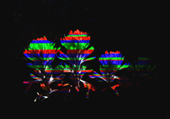
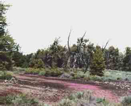

-
 Winter in Craters© Roger Boe
Winter in Craters© Roger Boe -
 Flowers© Roger Boe
Flowers© Roger Boe -
 Cinder Cone© Roger Boe
Cinder Cone© Roger Boe -
 Spring Flowers© Roger Boe
Spring Flowers© Roger Boe -
 Tree in Rock© Roger Boe
Tree in Rock© Roger Boe -
 Ferns in Rocks© Roger Boe
Ferns in Rocks© Roger Boe -

Flowers© Roger Boe
-

Spring Flowers© Jan Larcom